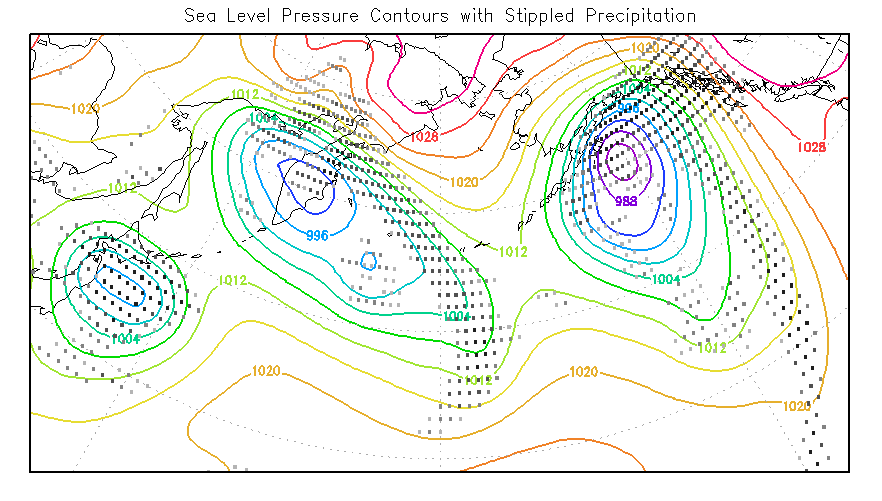
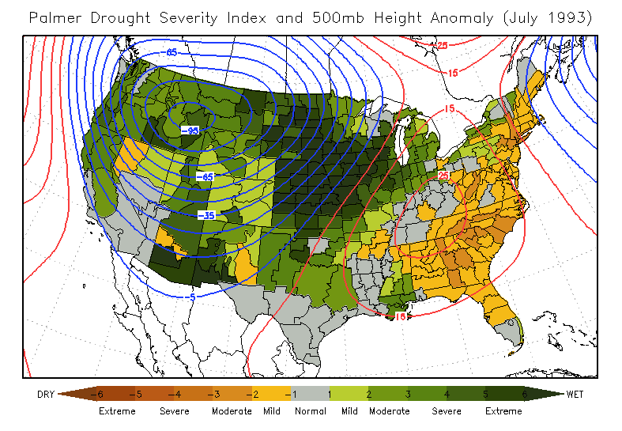
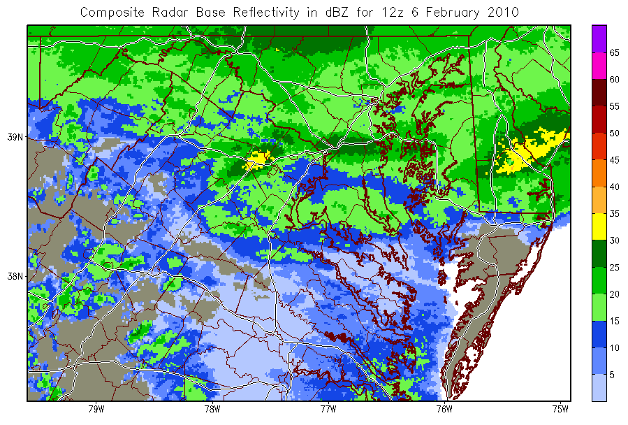

Introduction
What is a shapefile?
Drawing shapefiles
Querying shapefiles
Relevant Environment Variables
Writing shapefiles
Examples
Caveat

Introduction
GrADS version 2.0.a8 introduced the new capability to draw and query the contents of a shapefile; version 2.0.a9 added the capability to create new shapefiles from GrADS gridded or station data sets. This documentation page serves as an overview of the GrADS shapefile inteface, providing guidance on what shapefiles are, how to find out what they contain, how to draw their contents, and how to create new shapefiles.
What is a Shapefile?
The shapefile format (promulgated by ESRI) stores non-topological geometry and attribute information for the spatial features in a data set. Shapefiles are used extensively in Geographic Information Systems (GIS) and they typically contain data related to coastlines, political boundaries, state or county boundaries, climate zones, roads, rivers, topography, etc. The geometry of each spatial feature or 'shape' is stored as a set of vector coordinates. Shapes can be points, lines, or polygons (areas). An ESRI shapefile actually consists of several files: a main file (*.shp), an index file (*.shx), a dBASE file (*.dbf), and an optional projection file (*.prj). The main file describes a set of shapes with a list of their vertices. The index file contains offsets pointing to the locations of each shape in the main file. The dBASE file contains attribute data for each shape in the main file.
The projection file contains specifics about the spherical geometry; it is an optional but useful component of a shapefile.
Some resources for freely available shapefiles are:
Drawing Shapefiles
GrADS will draw the contents of a shapefile as an overlay on top of an existing plot with the command draw shp. It is necessary to draw a plot first in order to establish the dimensions and scaling of the display. Shapefiles contain 2-dimensional spatial features, so your plot must be varying in the X-Y (lon/lat) domain.
A shapefile may contain one of three kinds of graphical elements: points, lines, or polygons.
set shpopts command, and the color is controlled by the set line command. set line command. set line command. Use the set shpopts command to draw filled polygons and set the fill color. The draw shp command draws all the shapes in the shapefile by default, but it is possible to specify a single shape or a range of shapes to draw. Using these extra arguments to the draw shp command, you can control the line and color characteristics of individual shapes. The q shpopts command lists the current settings for drawing shapefiles.
Querying Shapefiles
The GrADS shapefile interface also allows the user to discover the contents of a shapefile. The q shp command returns information about the shapes in the file (number of vertices and lon/lat bounds), and the q dbf command returns all the attribute information for each shape in the file.
The first line of the q shp output contains the shapefile type, the number of shapes in the file, and the X and Y bounds of actual extent of the shapes in the file. Subsequent lines list information about each shape element in the file: the identification number, the shape type, the number of parts, the number of vertices, and the bounds of the shape in the X, Y, Z, and M (measure) dimesions. The GrADS interface ignores the Z or M values of a shape, only it's position in X,Y (lon,lat) space is relevant.
The first line of the q dbf output contains a comma-delimited list of the names of all the attributes for each record in the database. Subsequent lines contain the comma-delimited list of all the attribute values for each record.
Please refer to the reference pages for q shp and q dbf for additional information and examples of the output.
Relevant Environment Variables
When drawing and querying shapefiles, if you put the set of component files (*.shp, *.shx, *.dbf) in the GrADS data directory (specified by the environment variable GADDIR), then it is not necessary to include the full path when referring to the shapefile. Starting with GrADS version 2.0.0, a new environment variable was introduced, GASHP, for specifiying a list of directories that contain shapefiles. Multiple directories may be included in the GASHP variable -- acceptable delimters are a space, a comma, a semi-colon, and a colon. GrADS will search for the requested shapefile in the directories listed in the GASHP environment variable before it looks in the GADDIR directory. Note that GrADS does not use the projection information (*.prj) when drawing the contents of a shapefile.
Writing Shapefiles
GrADS version 2.0.a9 adds the capability of writing out shapefiles based on gridded or station data sets. The shape types currently supported are points and lines. Point shapes may be created from station data or from individual grid point values. The GrADS station data format is a natural fit for point shapefiles, but grid point values are also useful in the shapefile format -- they can be used to create a stippled overlay on top of shaded contour plot (see Examples below). Line shapes are created by applying the contouring algorithm to a grid expression. The settings to control contour levels apply when creating line shapefiles. Both point and line shape types are 'measured' in that the data value at each point (or the contour level) are included in the shapefile along with the geographic coordinates.
To write out a shapefile, there is a new graphics output option, set gxout shp. This graphics option is used in conjunction with the set shp command which allows the user to set the filename root for shapefile output, control the type of shapefile to be created, and set formatting options for numeric values. The display command will then create the four shapefile output files instead of drawing a plot.
The dBase file created with the shapefile contains metadata fields or attributes for each shape. There are three data types for attributes: string, integer, or double. Attributes may be static (the attribute value is the same for each shape) or dynamic (the attribute value varies with shape). A set of attributes (both static and dynamic) are automatically generated by GrADS for all shapes. Attributes for point shapes from station data are: GrADS version, longitude, latitude, station ID, and the station value. Attributes for point shapes from gridded are: GrADS version, longitude, latitude, and the grid value. Attributes for line shapes (contours) are: GrADS version and the contour value. Additional static attributes for each shape may be assigned by the user with the set shpattr command. Numerical attribute values (integers and doubles) are written to the dBase file in text format. The set shp command controls the formatting of the numbers, by specifiying the length of the number (total number of columns) and the precision (number of places to the right of the decimal place, which is only meaningful for attributes of type double).
The q shpopts command lists the current settings for shapefile output, including the output file name root, the type of shapefile to be created, the formatting of any numeric output, and any user-provided attributes.
The clear shp command releases all user-defined shapefile attributes from memory, and resets the output filename root and shapefile type to their default values. The reset and reinit commands will do the same thing -- use clear shp if you do not want to reset all the other user settings.
Examples
Here are two examples showing a series of commands to create shapefiles:
set gxout shp set shp -pt -fmt 8 4 gridptm set shpattr AUTHOR string JMA set shpattr TYPE string grid points set shpattr DESC string land surface temperature d maskout(tsfc,landmask-1) set gxout shp clear shp set shp -ln -fmt 8 4 linem set shpattr AUTHOR string JMA set shpattr TYPE string grid contours set shpattr DESC string surface temperature d tsfc
Here is a slightly more complicated example script that shows how to create a shapefile from a GrADS gridded data set (a GFS precipitation forecast), and then draws the contents of that shapefile as a stippled overlay (with three gray shades) on top of a contour plot of another variable, sea level pressure. The script generates a plot that looks like this:

Here is another example script that shows how to use the shapefile interface to draw U.S. climate divisions colorized according to the values of the Palmer Drought Severity Index (PDSI), and then overlays the 500mb height anomaly (from a GDS data set) for that same month and year. The script generates a plot that looks like this:

The final example script uses shapefiles to draw state and county boundaries as well as roads on a radar image instead of drawing the GrADS map. Here is the result:

Caveat
The ESRI Shapefile Techncial Description states that "A polygon consists of one or more rings. A ring is a connected sequence of four or more points that form a closed, non-self-intersecting loop." A polygon with two rings would look something like a flat donut -- the area between the two rings forms the interior of the polygon, and the area enclosed by the inner ring is actually in the exterior of the polygon. The GrADS interface does not draw polygons with more than one ring properly. Each ring in a polygon is handled separately; inner rings are drawn as new polygons overlapping the outer ring. If you are drawing a shapefile that contains polygons with more than one ring, and if you use the set shpopts command to draw filled polygons, then GrADS will draw both the inner and outer rings as filled polygons. In other words, your donuts will be drawn with filled holes.
The rings of a polygon are referred to as its parts, and the number of parts in each polygon is included in the ouput of the q shp command. So it is possible to discover whether this limitation is affecting your plot.